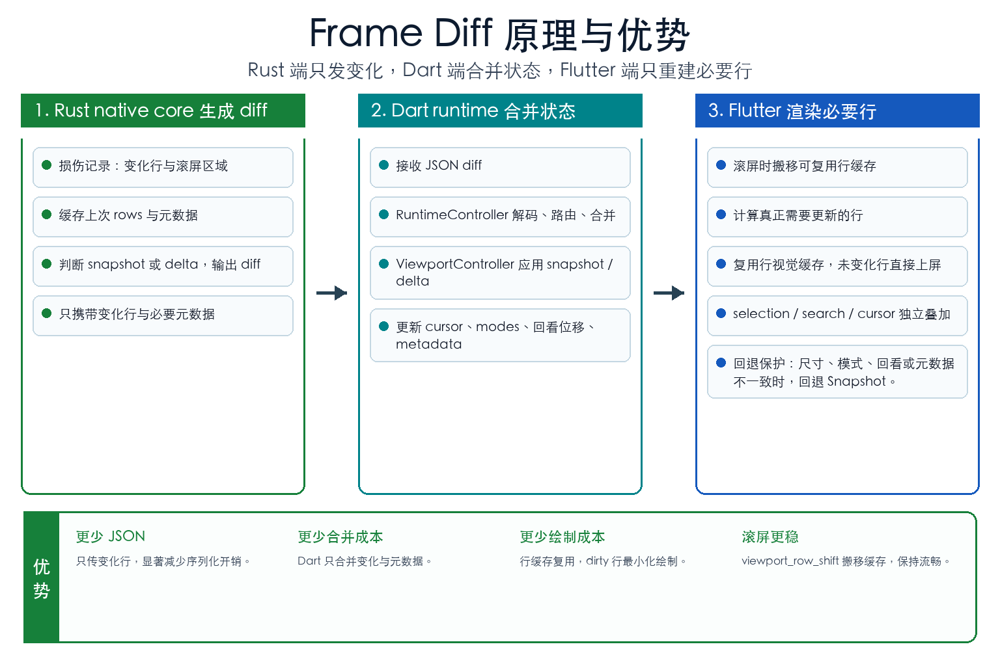
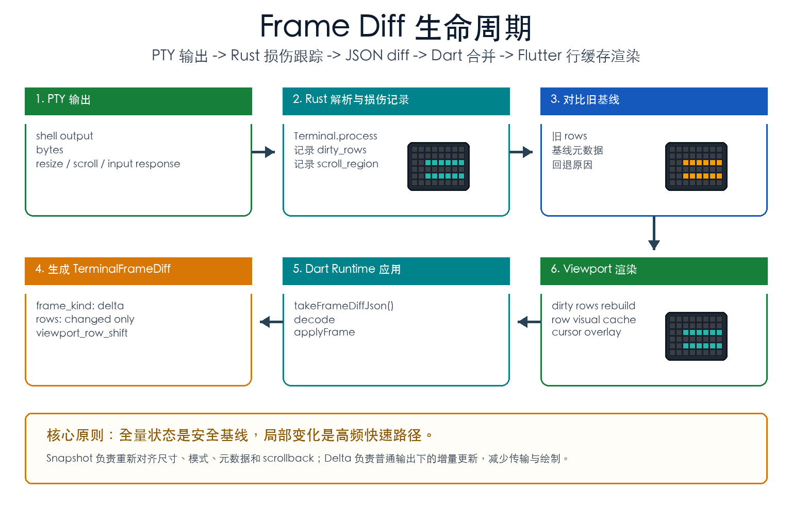
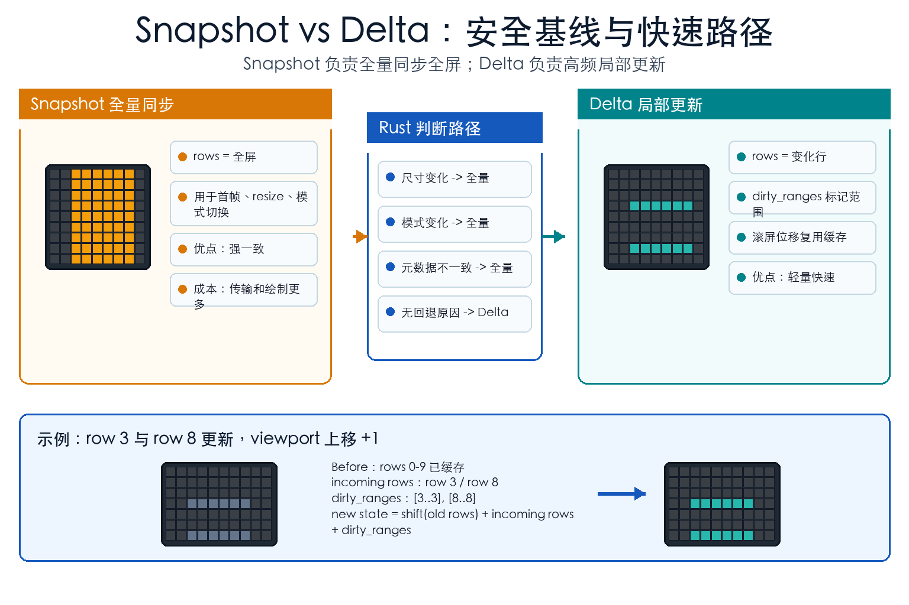
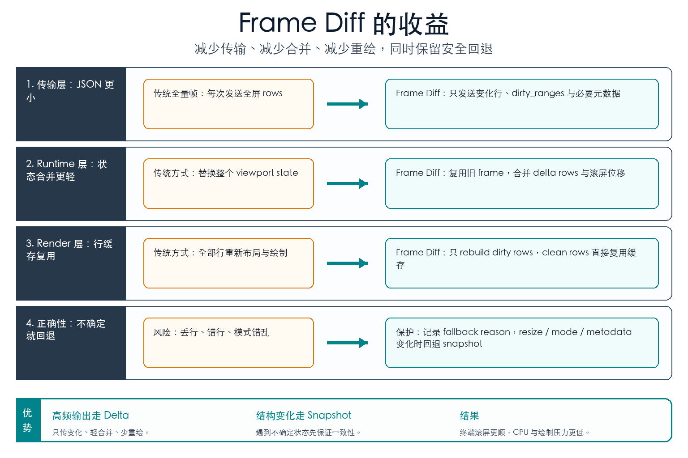
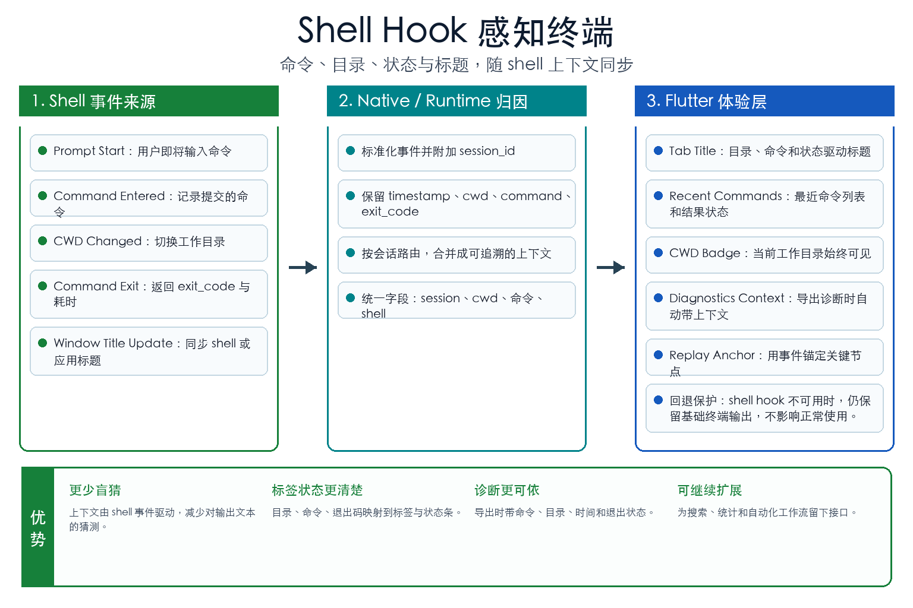
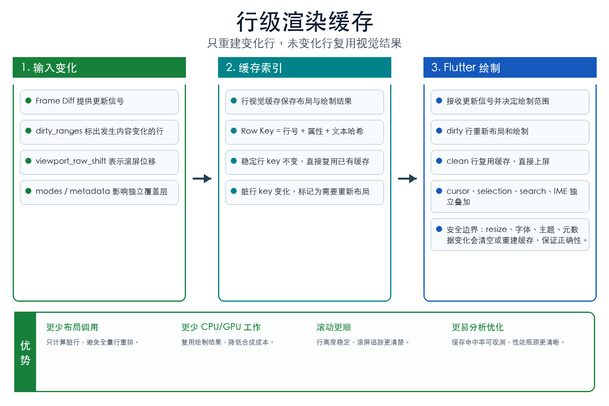
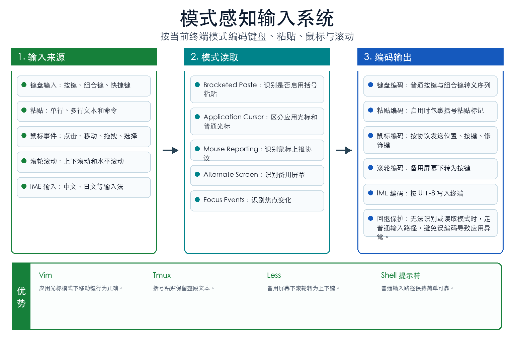
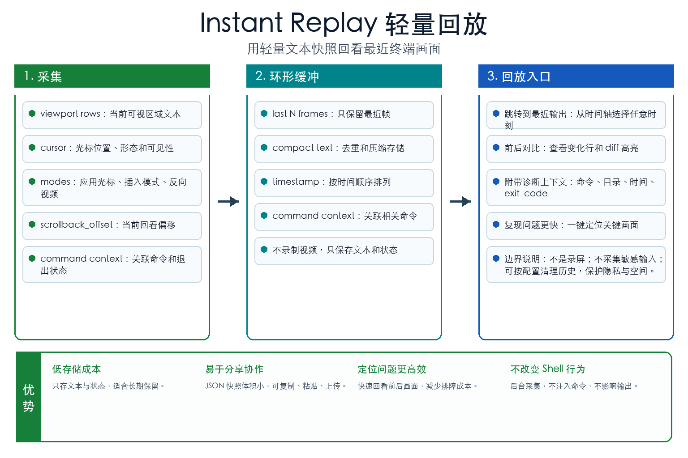

UI shell
窗口壳、tab、菜单、profile 和 defaults 留在 app 层，避免把产品词汇塞进底层 package。
Technology
flutterm 用 Flutter 承载桌面界面，用 package 收口终端运行时，用 Rust native core 处理更贴近系统的终端能力。
Architecture
窗口壳、tab、菜单、profile 和 defaults 留在 app 层，避免把产品词汇塞进底层 package。
负责 session runtime、viewport、输入、选区和滚动适配，是 Flutter 侧终端行为的主要边界。
负责 PTY 会话传输和 FFI 包装，只暴露创建、写入、读取、resize、scroll、close 这类底层能力。
负责 PTY、VT 解析、frame diff 和事件输出，承接真正贴近终端底层的工作。
Capability map
产品能力不是散在页面里的口号。每个亮点都对应到现有分层，让用户能看懂体验从哪里来，也方便开发者继续扩展。
Shell Hook 带来的标题、目录和命令线索，以及 Instant Replay 的最近画面回看，最终都在 app 层变成用户能操作的界面。
模式感知输入、行级渲染缓存和 xterm 风格 Dart API 主要在这一层收口，负责把 native 状态变成稳定的 Flutter 行为。
Native JSON 请求通道从这里进入 Rust core，让搜索、选区、滚动历史和诊断能力可以继续扩展，而不打散 PTY 边界。
frame diff、Shell Hook 事件、终端模式和诊断归因在 native core 里生成，为 Flutter 侧渲染和产品层功能提供可信数据。
Frame Diff visuals
这组图用于解释 frame diff 为什么能减少传输、合并和重绘，同时保留 snapshot 作为可靠回退。图内信息较密，点击可以打开原图查看。

完整链路从 Rust native core 的损伤记录开始，到 Dart runtime 合并状态，再到 Flutter 只更新必要行。

展示 PTY 输出到 viewport 渲染的六段路径，说明 delta 和 snapshot 分别在什么时候出现。

解释安全基线和高频路径的分工：不确定时回到 snapshot，普通输出走 delta。

从传输、状态合并、渲染复用和正确性回退四个角度看优化边界。
Feature visuals
Shell Hook、行级缓存、模式感知输入和 Instant Replay 都不是孤立卖点。它们各自有输入、状态处理、体验出口和回退边界。

把 prompt、命令、目录变化和退出状态整理成可归因事件，再映射到 tab、最近命令、诊断上下文和回放锚点。

用 dirty ranges、row key 和缓存命中判断减少重复布局与绘制，同时在尺寸、字体和主题变化时保留安全清理路径。

键盘、粘贴、鼠标和滚动会先读取当前终端模式，再决定编码方式，让 vim、tmux、less 和普通 shell 都走合适路径。

用最近 N 帧的文本快照支持回看、对比和问题复现，不录制视频，也不改变 shell 行为。
Terminal behavior
xterm probes、回归测试和手工验证队列用于校准行为边界。可信来自持续验证，而不是一句口号。
Verification
| 类型 | 目的 |
|---|---|
| Flutter tests | 验证 UI、session 和交互行为。 |
| Dart tests | 验证 package 逻辑和边界。 |
| Rust tests | 验证 native core 行为。 |
| macOS manual smoke | 验证桌面真实交互。 |
| performance baseline | 观察终端输出和渲染表现。 |
Repository evidence
{kind=link}
{kind=link}
{kind=link}
{kind=link}
{kind=link}
{kind=link}
{kind=link}
{kind=link}